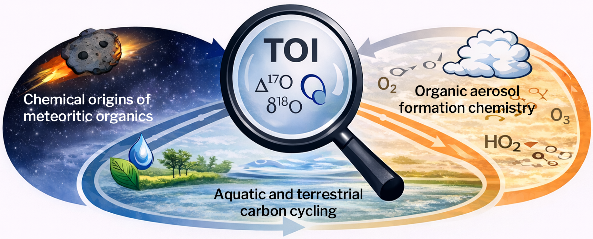
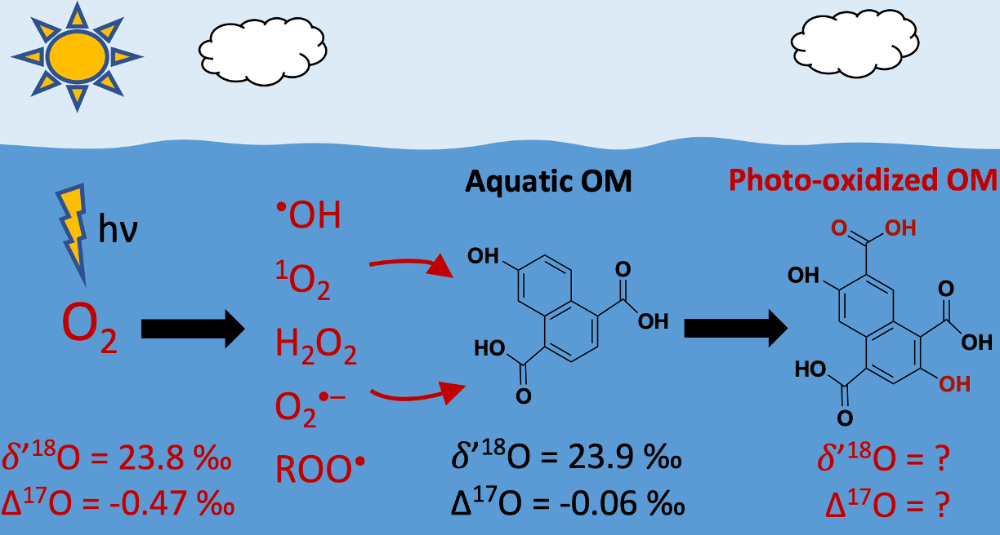

Research
Tracing chemical histories with isotopes
My research program develops and applies stable isotope tools to reconstruct the sources, reactions, and transport processes that govern organic matter across atmospheric, terrestrial, and extraterrestrial environments.

Theme 1
Reconstructing the origins of complex organic matter in the early Solar System

Meteorites preserve some of the oldest organic material in the Solar System, providing a window into the chemistry that preceded the formation of planets and potentially contributed to the emergence of life. I use stable isotope geochemistry—particularly triple oxygen isotopes—to reconstruct where and how this organic matter formed and how it was subsequently modified within asteroids.
My recently published research revealed that insoluble organic matter from primitive carbonaceous meteorites shares a remarkably similar oxygen isotope composition despite experiencing different alteration histories within their asteroid parent bodies. This isotopic coherence suggests that these meteorites inherited a common organic component whose isotopic signature was acquired during its formation at an earlier stage of Solar System evolution. These findings provide new constraints on the origin and distribution of complex OM in the early Solar System.
I am now extending these isotopic measurements across additional meteorite groups and combining them with experimental and astrophysical models to determine when, where, and through which chemical pathways complex organic matter formed in the early Solar System.
Theme 2
Aquatic & Terrestrial Carbon Cycling
Photochemical oxidation is an important but poorly constrained process governing the degradation and transformation of organic matter (OM) in surface environments. My research develops triple oxygen isotope tools to identify the oxidation pathways responsible for these transformations and quantify their role in environmental carbon cycling.
Through laboratory experiments, I have shown that different aqueous oxidants impart distinct oxygen isotope signatures to OM during oxidation, providing isotopic fingerprints of individual reaction pathways. Building on this foundation, my research combines controlled oxidation experiments with measurements of natural waters to determine the mechanisms and rates of OM oxidation in aquatic environments. Ultimately, this work seeks to establish isotope-based constraints on how OM oxidation regulates aquatic carbon fluxes, atmosphere-water exchange, and climate-relevant carbon cycling.

Theme 3
Atmospheric Organic Aerosol Chemistry
My research uses stable isotope measurements to investigate the sources, chemical transformations, and atmospheric processing of organic aerosols. My doctoral research utilized sophisticated ocean-atmosphere experimental systems to determine how seawater biogeochemistry and particle size influence the organic composition and carbon isotope signatures of sea spray aerosol (Crocker+, 2020; 2022), establishing a more accurate basis for isotopic tracing of carbonaceous aerosol sources.
My current research as an NSF-AGS Postdoctoral Fellow addresses the complementary problem of characterizing how atmospheric oxidation processes govern organic aerosol formation and chemical evolution. This work has revealed that oxygen isotope signatures associated with different oxidation pathways are preserved in atmospheric OA, providing a direct record of its oxidation history that can be used place quantitative constraints on the contributing chemical pathways.
My ongoing work connects isotope-resolved aerosol sources and transformation pathways with changes in composition, optical properties, and cloud-forming potential to determine how atmospheric chemistry modifies aerosol climate effects. Ultimately, I seek to establish a unified isotope-based framework for reconstructing aerosol chemical histories and predicting how those histories influence their environmental and climatic roles.